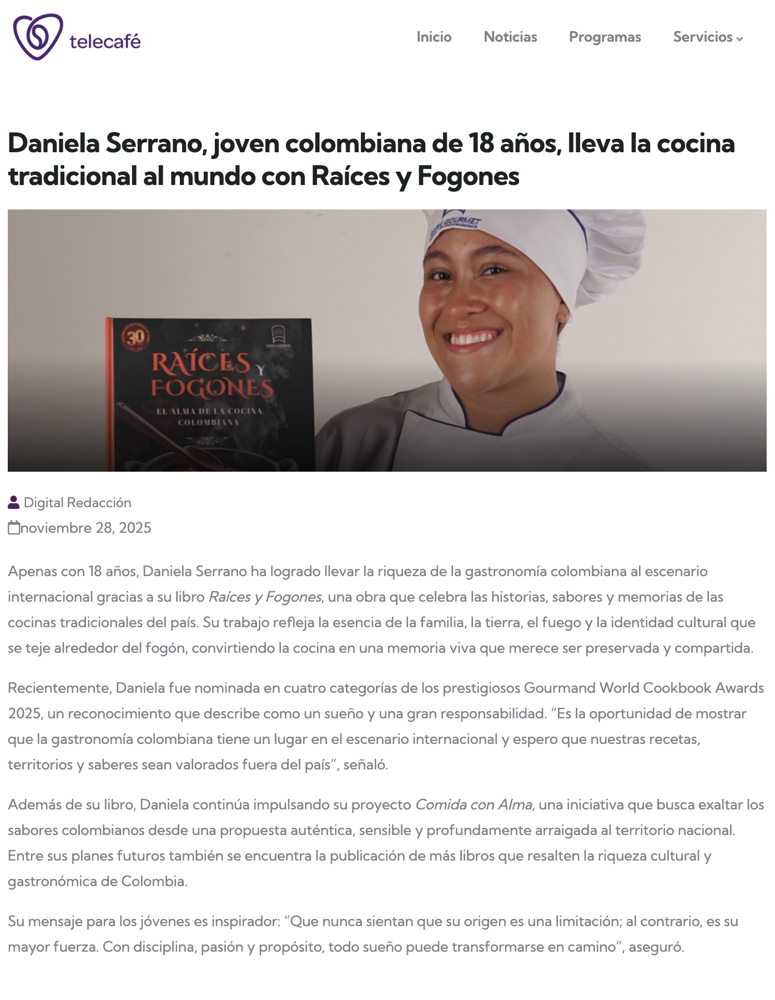

13 DE JULIO DE 2025
ENTREVISTA
La entrevista fue un espacio para compartir experiencias, aprendizajes y sueños. A través de las preguntas y respuestas, se pudo profundizar en la historia personal y profesional, inspirando a otros a seguir sus metas. Este momento permitió reflexionar sobre el camino recorrido y motivar a quienes buscan crecer en el mundo de la gastronomía.
